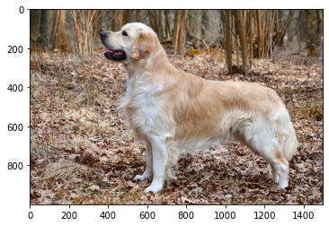

Converting a TensorFlow 1 Image Classifier
The following example converts the TensorFlow Inception V1 image classifier to a Core ML neural network classifier model that directly predicts the class label of the input image. It demonstrates the importance of setting the image preprocessing parameters correctly to get the right results.
Prerequisites
To use TensorFlow 1 (version 1.15) for this example, you may need to change your version of Python to one that works with TensorFlow 1. For details, see the following:
For virtual environments, see How to manage multiple Python versions.
For Miniconda and Anaconda environments, see Managing Python.
You may also need to install Pillow, Requests, and matplotlib. The following commands work for a Miniconda environment:
conda install python=3.7.9
conda install tensorflow==1.15
pip install pillow
conda install requests
conda install matplotlib
Download the Model
The following code downloads the Inception V1 frozen TF graph (the .pb file):
# Download the model and class label package
from __future__ import print_function
import os, sys
import tarfile
def download_file_and_unzip(url, dir_path='.'):
"""Download the frozen TensorFlow model and unzip it.
url - The URL address of the frozen file
dir_path - local directory
"""
if not os.path.exists(dir_path):
os.makedirs(dir_path)
k = url.rfind('/')
fname = url[k+1:]
fpath = os.path.join(dir_path, fname)
if not os.path.exists(fpath):
if sys.version_info[0] < 3:
import urllib
urllib.urlretrieve(url, fpath)
else:
import urllib.request
urllib.request.urlretrieve(url, fpath)
tar = tarfile.open(fpath)
tar.extractall(dir_path)
tar.close()
inception_v1_url = 'https://storage.googleapis.com/download.tensorflow.org/models/inception_v1_2016_08_28_frozen.pb.tar.gz'
download_file_and_unzip(inception_v1_url)
Load the Graph Definition
The following code loads the TensorFlow graph to find the input and output tensor names. You use them in the conversion process and for running the graph for a numerical accuracy check:
# Load the TF graph definition
import tensorflow as tf # 1.x
tf_model_path = './inception_v1_2016_08_28_frozen.pb'
with open(tf_model_path, 'rb') as f:
serialized = f.read()
tf.reset_default_graph()
original_gdef = tf.GraphDef()
original_gdef.ParseFromString(serialized)
# Lets get some details about a few ops in the beginning and the end of the graph
with tf.Graph().as_default() as g:
tf.import_graph_def(original_gdef, name='')
ops = g.get_operations()
N = len(ops)
for i in [0,1,2,N-3,N-2,N-1]:
print('\n\nop id {} : op type: "{}"'.format(str(i), ops[i].type));
print('input(s):'),
for x in ops[i].inputs:
print("name = {}, shape: {}, ".format(x.name, x.get_shape())),
print('\noutput(s):'),
for x in ops[i].outputs:
print("name = {}, shape: {},".format(x.name, x.get_shape())),
As shown in the following results, the output of the Placeholder op is the input (input:0), and the output of the Softmax op (near the end of the graph) is the output (InceptionV1/Logits/Predictions/Softmax:0).
op id 0 : op type: "Placeholder"
input(s):
output(s):
name = input:0, shape: (1, 224, 224, 3),
op id 1 : op type: "Const"
input(s):
output(s):
name = InceptionV1/Conv2d_1a_7x7/weights:0, shape: (7, 7, 3, 64),
op id 2 : op type: "Identity"
input(s):
name = InceptionV1/Conv2d_1a_7x7/weights:0, shape: (7, 7, 3, 64),
output(s):
name = InceptionV1/Conv2d_1a_7x7/weights/read:0, shape: (7, 7, 3, 64),
op id 1012 : op type: "Softmax"
input(s):
name = InceptionV1/Logits/Predictions/Reshape:0, shape: (1, 1001),
output(s):
name = InceptionV1/Logits/Predictions/Softmax:0, shape: (1, 1001),
op id 1013 : op type: "Const"
input(s):
output(s):
name = InceptionV1/Logits/Predictions/Shape:0, shape: (2,),
op id 1014 : op type: "Reshape"
input(s):
name = InceptionV1/Logits/Predictions/Softmax:0, shape: (1, 1001),
name = InceptionV1/Logits/Predictions/Shape:0, shape: (2,),
output(s):
name = InceptionV1/Logits/Predictions/Reshape_1:0, shape: (1, 1001),
Convert to Core ML
The following code sets the image_inputs for inputs and the output name ('InceptionV1/Logits/Predictions/Softmax') for outputs in order to use them with the convert() method. The convert() method produces a neural network by default:
import coremltools as ct
image_inputs = ct.ImageType(shape=(1, 224, 224, 3))
classifier_config = ct.ClassifierConfig('imagenet_slim_labels.txt')
coreml_model_file = './inception_v1.mlmodel'
output = ['InceptionV1/Logits/Predictions/Softmax']
coreml_model = ct.convert(tf_model_path,
inputs=[image_inputs],
classifier_config=classifier_config,
outputs=output)
coreml_model.save(coreml_model_file)
The result shows the progress of the conversion:
Running TensorFlow Graph Passes: 100%|██████████| 7/7 [00:02<00:00, 3.24 passes/s]
Converting Frontend ==> MIL Ops: 100%|██████████| 441/441 [00:00<00:00, 926.87 ops/s]
Running MIL optimization passes: 100%|██████████| 17/17 [00:00<00:00, 20.06 passes/s]
Translating MIL ==> MLModel Ops: 100%|██████████| 839/839 [00:00<00:00, 1085.04 ops/s]
Load a Test Image
To make predictions on the same image using both the original model and the converted model, the following sample code snippet loads a test image. It uses NumPy, Pillow, Requests, and matplotlib:
# Load an image
import numpy as np
import PIL
import requests
from io import BytesIO
from matplotlib.pyplot import imshow
# This is an image of a golden retriever from Wikipedia
img_url = 'https://upload.wikimedia.org/wikipedia/commons/9/93/Golden_Retriever_Carlos_%2810581910556%29.jpg'
response = requests.get(img_url)
%matplotlib inline
img = PIL.Image.open(BytesIO(response.content))
imshow(np.asarray(img))
The code shows the following image:
This image of a golden retriever is from Wikipedia.
Input the Image and Make a Prediction
The following code passes the PIL image into the Core ML model after resizing it, and uses a NumPy array of the image to make a prediction:
# To get CoreML predictions directly pass in the PIL image after resizing
import coremltools
img = img.resize([224,224], PIL.Image.ANTIALIAS)
coreml_inputs = {'input': img}
coreml_output = coreml_model.predict(coreml_inputs)
coreml_pred_dict = coreml_output[output[0]]
coreml_predicted_class_label = coreml_output['classLabel']
#for getting TF prediction we get the numpy array of the image
img_np = np.array(img).astype(np.float32)
print( 'image shape:', img_np.shape)
print( 'first few values: ', img_np.flatten()[0:4], 'max value: ', np.amax(img_np))
img_tf = np.expand_dims(img_np, axis = 0) #now shape is [1,224,224,3] as required by TF
# Evaluate TF and get the highest label
tf_input_name = 'input:0'
tf_output_name = 'InceptionV1/Logits/Predictions/Softmax:0'
with tf.Session(graph = g) as sess:
tf_out = sess.run(tf_output_name,
feed_dict={tf_input_name: img_tf})
tf_out = tf_out.flatten()
idx = np.argmax(tf_out)
label_file = 'imagenet_slim_labels.txt'
with open(label_file) as f:
labels = f.readlines()
#print predictions
print('\n')
print("CoreML prediction class = {}, probability = {}".format(coreml_predicted_class_label,
str(coreml_pred_dict[coreml_predicted_class_label])))
print("TF prediction class = {}, probability = {}".format(labels[idx],
str(tf_out[idx])))
The result shows that both predictions match, which ensures that the conversion is correct. However, the class labels are incorrect:
image shape: (224, 224, 3)
first few values: [39. 33. 18. 42.] max value: 255.0
CoreML prediction class = thatch, probability = 0.5372982025146484
TF prediction class = thatch
, probability = 0.5372873
The class labels are incorrect because the image was not preprocessed correctly before it was passed to the neural network.
Preprocess the Image Before Converting
Preprocessing is always a crucial step when using neural networks on images. The best approach is to find the source of the pre-trained model and check for the preprocessing that the model’s author used during training and evaluation.
In this case, the TensorFlow model comes from the
SLIM library,
and the preprocessing steps are defined in the preprocess_for_eval definition in inception_preprocessing.py. The image pixels have to be scaled to lie within the interval [-1,1].
(“models/research/slim/preprocessing/inception_preprocessing.py”).
The following code preprocesses the image and makes a new prediction:
img_tf = (2.0/255.0) * img_tf - 1
with tf.Session(graph = g) as sess:
tf_out = sess.run(tf_output_name,
feed_dict={tf_input_name: img_tf})
tf_out = tf_out.flatten()
idx = np.argmax(tf_out)
print("TF prediction class = {}, probability = {}".format(labels[idx],
str(tf_out[idx])))
The TensorFlow model now predicts a dog as the highest class:
TF prediction class = English setter
, probability = 0.301507
Core ML automatically handles the image preprocessing when the input is of type image. However, the image biases and scale are not correct. The channel scale should be multiplied first before adding the bias. The following code converts the model again with this correction, and saves the newly converted model:
image_inputs = ct.ImageType(shape=(1, 224, 224, 3), bias=[-1,-1,-1], scale=2.0/255)
classifier_config = ct.ClassifierConfig('imagenet_slim_labels.txt')
coreml_model_file = './inception_v1.mlmodel'
output = ['InceptionV1/Logits/Predictions/Softmax']
coreml_model = ct.convert(tf_model_path,
inputs=[image_inputs],
classifier_config=classifier_config,
outputs=output)
coreml_model.save(coreml_model_file)
The result shows the progress of the conversion:
Running TensorFlow Graph Passes: 100%|██████████| 7/7 [00:02<00:00, 3.10 passes/s]
Converting Frontend ==> MIL Ops: 100%|██████████| 441/441 [00:00<00:00, 998.08 ops/s]
Running MIL optimization passes: 100%|██████████| 17/17 [00:00<00:00, 20.62 passes/s]
Translating MIL ==> MLModel Ops: 100%|██████████| 839/839 [00:00<00:00, 1125.96 ops/s]
The following code makes the prediction again with the newly converted Core ML model:
# Call CoreML predict again
coreml_output = coreml_model.predict(coreml_inputs)
coreml_pred_dict = coreml_output[output[0]]
coreml_predicted_class_label = coreml_output['classLabel']
print("CoreML prediction class = {}, probability = {}".format(coreml_predicted_class_label,
str(coreml_pred_dict[coreml_predicted_class_label])))
The output now correctly matches the TensorFlow output:
CoreML prediction class = English setter, probability = 0.3015042543411255
Predictions Can Vary Slightly
Predictions with the default Core ML predict call may vary slightly, since by default it uses a lower-precision optimized path for faster execution. In previous versions of Core ML Tools, you would restrict execution to the CPU by specifying the useCPUOnly=True flag. This flag is now deprecated. Instead, use the compute_units parameter at load time or conversion time (that is, in coremltools.models.MLModel or coremltools.convert(). For more information, see Set the compute units.